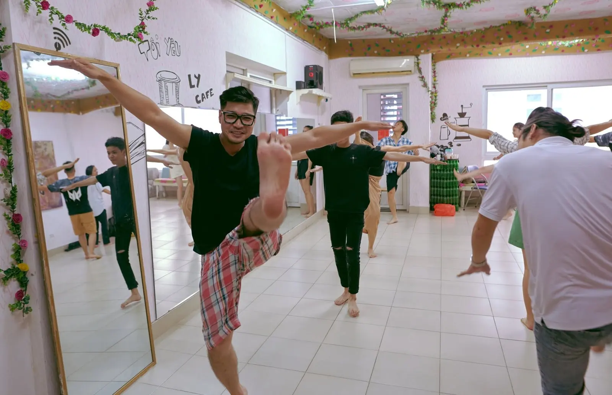
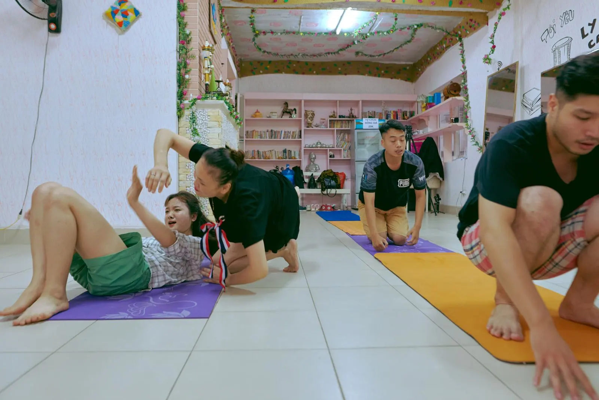
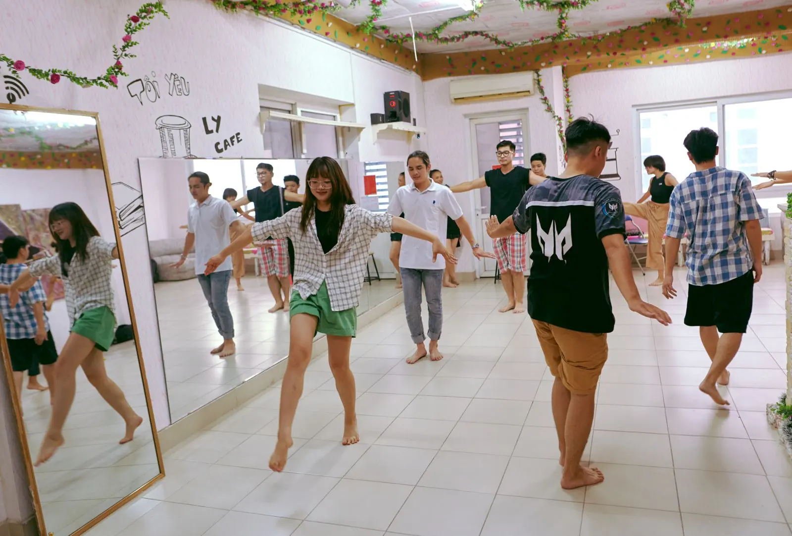
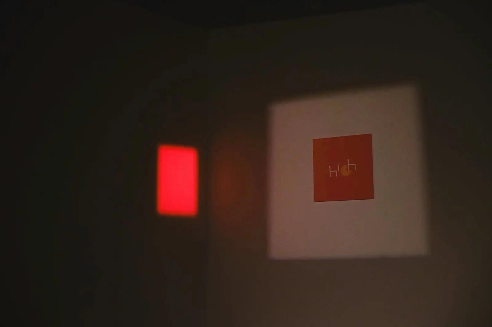
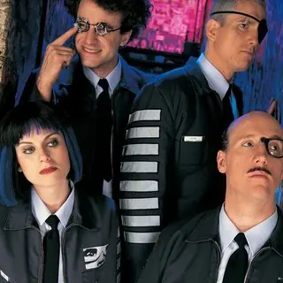
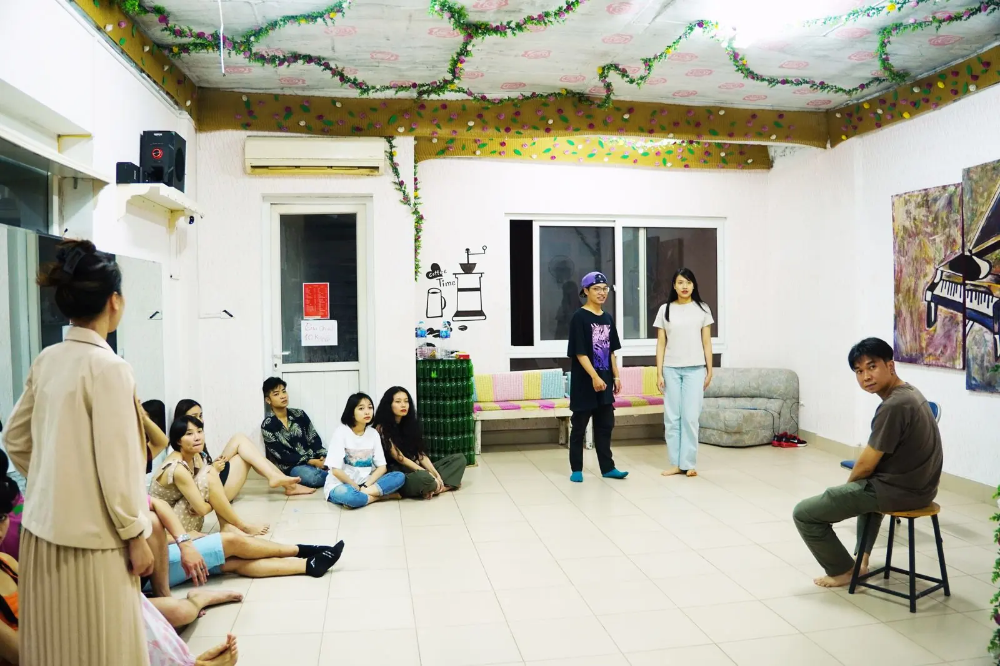
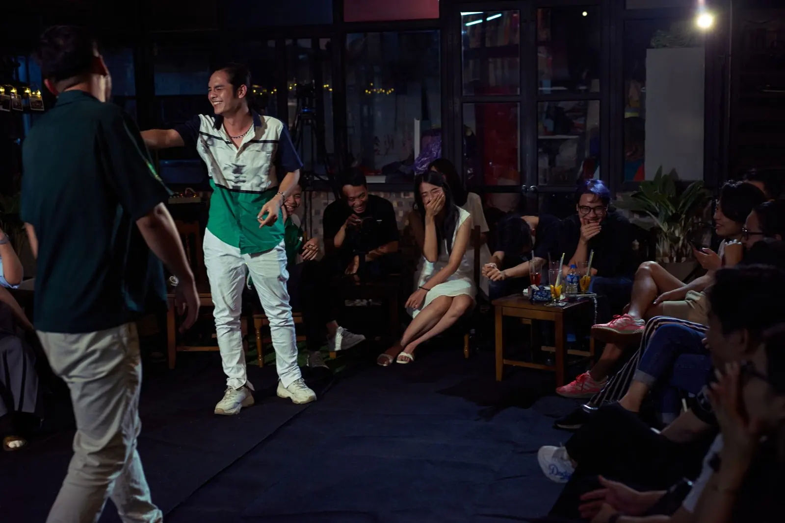
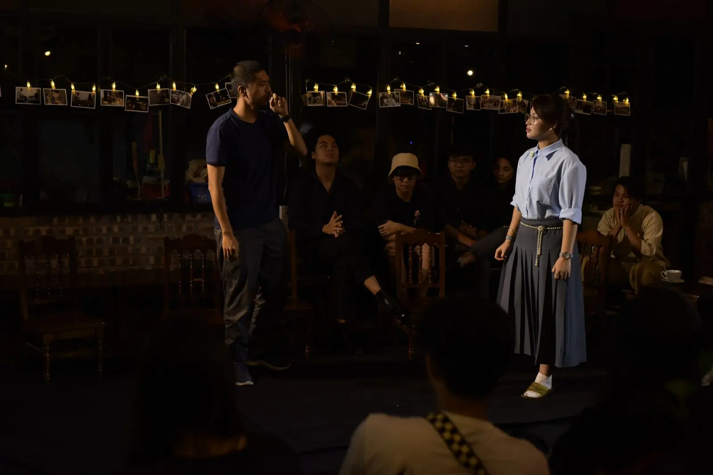
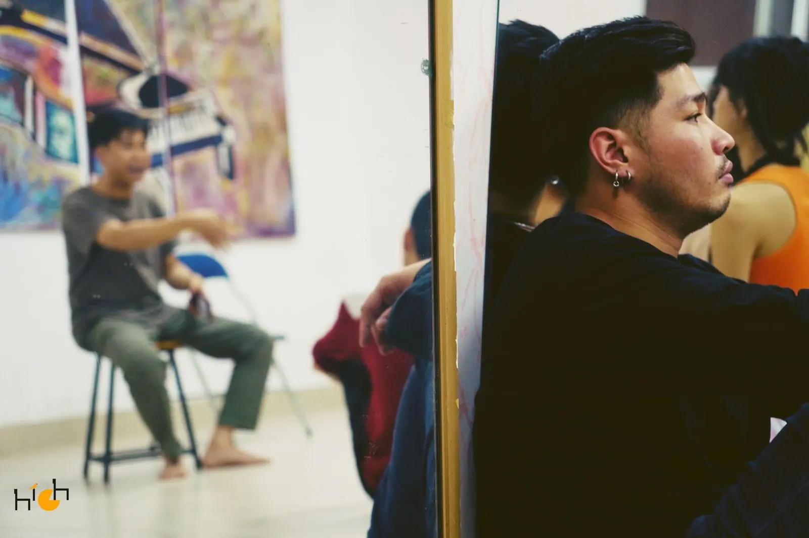
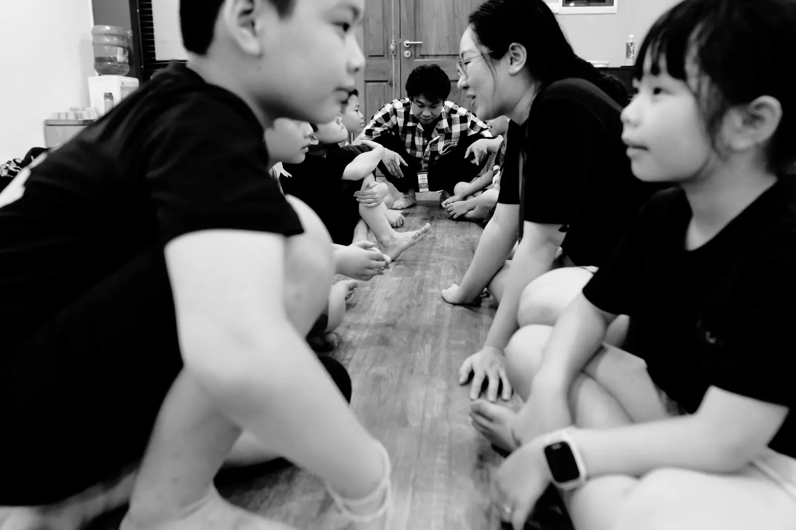

PHẦN 1 · PHÚT 0–20
Khởi động: đặt mọi thứ xuống
Công việc, bài vở, kẹt xe được để ngoài cửa. Cơ thể mở ra, cả nhóm hết ngại qua những trò chơi vòng tròn nhanh và buồn cười.
120 phút trên sàn tập: không bàn ghế, không sách vở, không ai chấm điểm. Chỉ có bạn, bạn diễn, và một giáo trình riêng của High Comedia, được kiểm chứng qua hàng trăm buổi tập.

Ứng tác chỉ học được bằng cơ thể và bằng việc chơi cùng người khác. Vì vậy mỗi buổi diễn ra trên sàn tập như của một đoàn kịch: mọi người ngồi thành vòng tròn, đứng lên, di chuyển, diễn, rồi lại ngồi xuống xem bạn diễn. Không ai ngồi im ghi chép suốt hai tiếng.
Vui, cởi mở, an toàn. Không chấm điểm, không phán xét. Sai là chuyện bình thường, thậm chí đáng mừng.
Lý thuyết được "nếm" qua trò chơi và cảnh diễn trước, rồi mới gọi tên. Bạn hiểu bằng trải nghiệm, không phải bằng học thuộc.
Trước buổi: mục tiêu và một bài đọc ngắn. Sau buổi: tài liệu đúc kết kỹ năng, kinh nghiệm và gợi ý thực hành trong tuần.

Do đạo diễn Đào Ngọc Hà thiết kế, đứng trên vai những bậc thầy đặt nền móng cho ứng tác thế giới, kết hợp với nghề đạo diễn và đào tạo diễn viên. Mọi bài tập đã được thử và chỉnh qua hàng trăm buổi tập của High Club.



Công việc, bài vở, kẹt xe được để ngoài cửa. Cơ thể mở ra, cả nhóm hết ngại qua những trò chơi vòng tròn nhanh và buồn cười.

Học bằng chơi, không bằng bài giảng. Đạo diễn quan sát và nhắc ngay khi bạn đang tập, để bạn sửa lúc còn "nóng".


Bạn lên sàn theo cặp hoặc nhóm, dựng một cảnh không kịch bản trước cả lớp. Một ghi chú nhỏ, diễn lại, và bạn thấy ngay mình khác đi.

Cả lớp ngồi lại vòng tròn. Mỗi người nói một điều mình nhận ra và một điều sẽ thử trong tuần tới.

Lớp thiếu nhi giữ cấu trúc 4 phần nhưng các trò chơi ngắn hơn, nhiều vận động và kể chuyện hơn, phù hợp sức tập trung của các con. Phần nhìn lại giúp các con tự nói ra điều mình đã làm được.
Xem lớp thiếu nhi →Cách tốt nhất để biết một buổi tập thế nào là thử một buổi. Rủ thêm một người bạn, hai bạn sẽ có một bạn diễn quen ngay từ phút đầu.
120 phút trên sàn tập: không bàn ghế, không sách vở, không ai chấm điểm. Chỉ có bạn, bạn diễn, và một giáo trình riêng của High Comedia, được kiểm chứng qua hàng trăm buổi tập.
Ứng tác học bằng cơ thể và bằng việc chơi cùng người khác. Cả lớp ngồi vòng tròn, đứng lên, diễn, rồi ngồi xuống xem bạn diễn. Không ai ngồi im ghi chép suốt hai tiếng.
Do đạo diễn Đào Ngọc Hà thiết kế, đứng trên vai những bậc thầy đặt nền móng cho ứng tác thế giới, kết hợp với nghề đạo diễn và đào tạo diễn viên. Mọi bài tập đã được thử và chỉnh qua hàng trăm buổi tập của High Club.
Công việc, bài vở, kẹt xe được để ngoài cửa. Cơ thể mở ra, cả nhóm hết ngại qua những trò chơi vòng tròn nhanh và buồn cười.
Học bằng chơi, không bằng bài giảng. Đạo diễn quan sát và nhắc ngay khi bạn đang tập, để bạn sửa lúc còn "nóng".
Bạn lên sàn theo cặp hoặc nhóm, dựng một cảnh không kịch bản trước cả lớp. Một ghi chú nhỏ, diễn lại, và bạn thấy ngay mình khác đi.
Cả lớp ngồi lại vòng tròn. Mỗi người nói một điều mình nhận ra và một điều sẽ thử trong tuần tới.
Cách tốt nhất để biết một buổi tập thế nào là thử một buổi. Rủ thêm một người bạn, hai bạn sẽ có một bạn diễn quen ngay từ phút đầu.
Đăng ký học thử